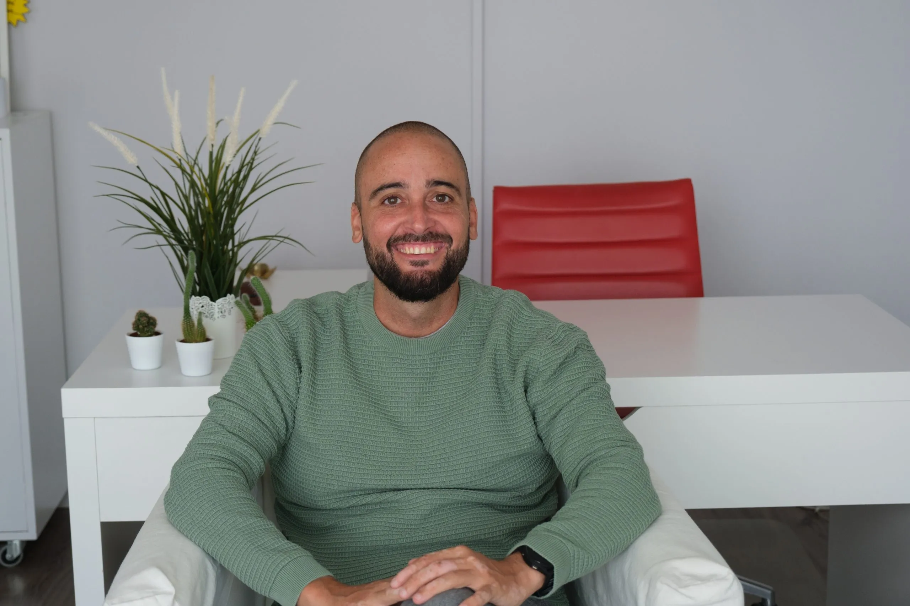

01
Puede ayudarte siQuieres entender qué te está pasando.
Terapia individual
Un espacio propio para comprender emociones y patrones, y desarrollar nuevas formas de relacionarte contigo y con tu vida.
Presencial en Sevilla · Terapia online
Soy Miguel Ángel, psicólogo especializado en terapia con personas adultas, parejas y familias. Te acompaño con cercanía y estrategias psicológicas contrastadas.
Google 5,0 Más de 95 opiniones Ver reseñas
Formas de acompañarte
El primer paso es comprender qué está ocurriendo. A partir de ahí definimos juntos objetivos claros y un proceso que tenga sentido para ti.
Puede ayudarte siQuieres entender qué te está pasando.
Un espacio propio para comprender emociones y patrones, y desarrollar nuevas formas de relacionarte contigo y con tu vida.
Puede ayudaros siOs sentís atrapados en las mismas discusiones.
Para mejorar la comunicación, comprender los conflictos y decidir cómo construir una relación más consciente.
Puede ayudaros siNecesitáis volver a escucharos.
Un contexto seguro para abordar dificultades compartidas, recuperar el diálogo y cuidar los vínculos familiares.
Puede ayudarte siQuieres llegar preparado a una entrevista exigente.
Preparación especializada para afrontar la entrevista personal con claridad, confianza y una estrategia realista.
Tarifas y modalidades
Elige la modalidad que mejor se adapte a tu situación. Todas las sesiones incluyen una atención personalizada y objetivos acordados contigo.
Terapia individual
Terapia de pareja
Terapia familiar
Una opción cómoda y confidencial para realizar las sesiones desde un lugar tranquilo, sin necesidad de desplazarte.
Consultar disponibilidad onlineConsulta presencial en Sevilla
Consulta presencial en el barrio de Nervión, con la ubicación completa disponible para que puedas organizar tu llegada antes de la cita.
Transporte públicoParadas en Ramón y Cajal y San Francisco Javier a pocos minutos. La estación de San Bernardo conecta con Metro L1 y Cercanías.
Si vienes en cocheHay estacionamiento regulado en el entorno de San Francisco Javier y aparcamientos públicos en las zonas de Viapol y San Bernardo.
AccesibilidadLa ficha pública indica acceso para silla de ruedas. Si necesitas asegurar condiciones concretas, consúltalas antes de acudir.
En Instagram
Ideas breves para comprender mejor nuestros pensamientos, emociones y relaciones.
Seguir @psicologo_mrReserva online
Consulta la disponibilidad actual y reserva directamente. El proceso es sencillo y recibirás la confirmación de Calendly por correo electrónico.
¿Prefieres preguntar antes? Escríbeme por WhatsApp.